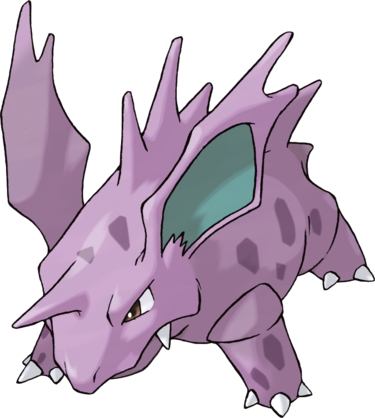

Nidorino est un Pokémon mâle au corps violet. Il possède une corne sur son front, une paire de canines et une colonne de piquants sur son dos. Ses grandes oreilles, dont l'intérieur est bleu canard pâle, sont munies de deux cornes chacune. Sa peau comporte quelques taches violet foncé par endroits et ses yeux sont rouges. Ce quadrupède possède trois griffes à chaque patte.